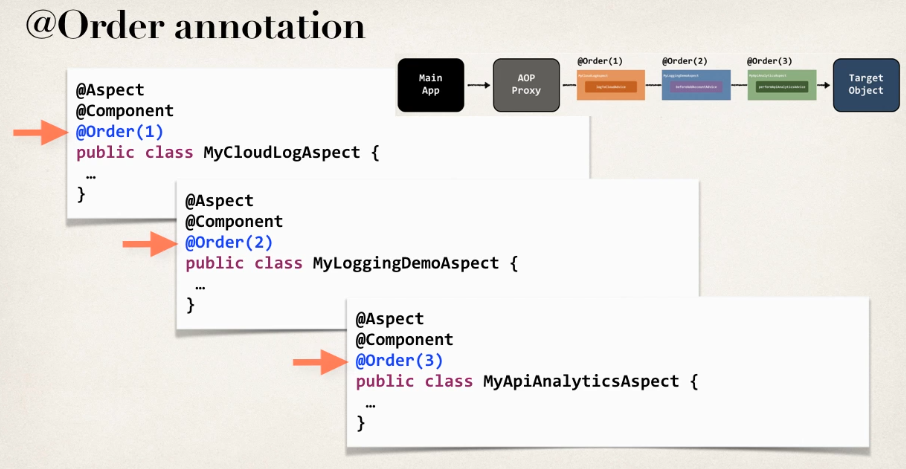
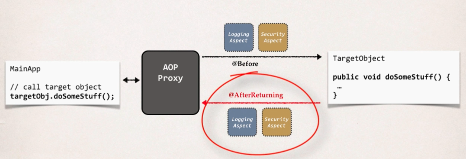

Spring AOP
Overview
Advantages
- Reusable modules
- Resolve code tangling
- Resolve code scatter
- Applied selectively based on configuration
Disadvantages
- Too many aspects and app flow is hard to follow
- Minor performance cost for aspect execution
Terminology
- Aspect: module of code for a cross-cutting concern (logging, security…)
- Advice: what action is takes and when it should be applied
- Joint Point: when to apply code during program execution
- Pointcut: a predicate expression for where advice should be applied
Advice Types
- Before advice: run before the method
- After finally advice: run after the method (like finally clause in try catch)
- After returning advice: run after the method (success execution)
- After throwing advice: run after the method (if exception if thrown)
- Around advice: run before and after the method
Weaving
It refers to the connection being made between aspects and target objects to create an advised object. There are different types:
- Compile-time
- Load-time
- Run-time
Note that the slowest is the run-time weaving
Best Practices
- Keep the code inside the advices small
- Keep the code fast
- Do not perform any expensive/slow operations
Before Advice
Add Dependencies
- We have to download the
AspectJjar file, becauseSpring AOPdepends on some on their framework’s classes
Create Target Object
We create a DAO object:
package com.aopdemo.dao;
import org.springframework.stereotype.Component;
@Component
public class AccountDAO {
public void addAccount() {
System.out.println(
getClass()
+ ": DOING MY DB WORK: ADDING AN ACCOUNT"
);
}
}Spring Configuration
We now have to enable AOP proxying in our app configuration:
package com.aopdemo;
import org.springframework.context.annotation.ComponentScan;
import org.springframework.context.annotation.Configuration;
import org.springframework.context.annotation.EnableAspectJAutoProxy;
@Configuration
// Enable proxying to add before advice
@EnableAspectJAutoProxy
@ComponentScan("com.aopdemo")
public class DemoConfig {
}Create Aspect with @Before
Now it is time to create an aspect with @Before advice:
package com.aopdemo.aspect;
import org.aspectj.lang.annotation.Aspect;
import org.aspectj.lang.annotation.Before;
import org.springframework.stereotype.Component;
@Aspect
@Component
public class MyDemoLoggingAspect {
// this is where we add all of our related advices for logging
// Here we specify we want to run this code before calling the
// object method public void addAccount
@Before("execution(public void addAccount())")
public void beforeAddAccountAdvice() {
System.out.println("\n=====>>> Executing @Before advice on addAccount()");
}
}Main App
We now create a demo app:
package com.aopdemo;
import org.springframework.context.annotation.AnnotationConfigApplicationContext;
import com.aopdemo.dao.AccountDAO;
public class MainDemoApp {
public static void main(String[] args) {
// read spring config java class
AnnotationConfigApplicationContext context =
new AnnotationConfigApplicationContext(DemoConfig.class);
// get the bean from spring container
AccountDAO theAccountDAO = context.getBean("accountDAO", AccountDAO.class);
// call the business method
theAccountDAO.addAccount();
// do it again!
System.out.println("\nlet's call it again!\n");
// call the business method again
theAccountDAO.addAccount();
// close the context
context.close();
}
}Pointcut Expressions
Execution Pointcut
The expression pattern is the following:
execution(modifiers-pattern? return-type-pattern declaring-type-pattern? method-name-pattern(param-pattern) throws-pattern?)modifiers-pattern?: Spring AOP only supports publicreturn-type-pattern: void, boolean, string, List, etc declaring-type-pattern?: the class namemethod-name-pattern(param-pattern): method name to match, and parameters type to matchthrows-pattern?: exception types to match
If the parameter is optional it is followed by an ?. You can also add wildcards inside the patterns.
Match Methods
Some examples are:
- Match concrete method inside a class:
@Before("execution(public void com.aopdemo.dao.AccountDAO.addAccount())")- Match a method inside any class:
@Before("execution(public void addAccount())")- Match any method that starts with add:
@Before("execution(public void add*())")- Match all methods inside a given package:
@Before("execution(** com.aopdemo.dao.**.*(..))")- The first
*denotes the return type, it can be anything - The second
*denotes the class name, it can be anything inside the package - The third
*denotes the method name, it can be anything - Lastly,
..denotes the param-type, there can be 0 or more parameters
Match Parameters
There are the following parameter pattern wildcards:
- (): matches a method with no arguments ** (**): matches a method with one argument of any type
- (..): matches a method with 0 or more arguments of any type
For example:
- Match addAccount methods with no arguments:
@Before("execution(* addAccount())")- Match addAcount methods with one Account parameter:
@Before("execution(* addAccount(com.aopdemo.Account))")- Match addAcount methods with any number of parameters:
@Before("execution(** addAccount(**))")Pointcut Declarations
Create Pointcut Declaration
We define the pointcut declaration with the Pointcut annotation and we bind it to an arbitrary method.
package com.aopdemo.aspect;
import org.aspectj.lang.annotation.Aspect;
import org.aspectj.lang.annotation.Before;
import org.aspectj.lang.annotation.Pointcut;
import org.springframework.stereotype.Component;
@Aspect
@Component
public class MyDemoLoggingAspect {
@Pointcut("execution(** com.aopdemo.dao.**.*(..))")
private void forDaoPackage() {}
}Reuse Pointcut Declaration
To reuse this declaration we simply call the method that is bound to the pointcut declaration:
package com.aopdemo.aspect;
import org.aspectj.lang.annotation.Aspect;
import org.aspectj.lang.annotation.Before;
import org.aspectj.lang.annotation.Pointcut;
import org.springframework.stereotype.Component;
@Aspect
@Component
public class MyDemoLoggingAspect {
@Pointcut("execution(** com.aopdemo.dao.**.*(..))")
private void forDaoPackage() {}
// Reuse declaration
@Before("forDaoPackage()")
public void beforeAddAccountAdvice() {
System.out.println("\n=====>>> Executing @Before advice on method");
}
// Reuse declaration
@Before("forDaoPackage()")
public void performApiAnalytics() {
System.out.println("\n=====>>> Performing API analytics");
}
}Combine Pointcut Declarations
How can we apply multiple pointcut expressions to a single advice? Well we can combine pointcut expressions using logic operators:
- AND (&&)
- OR (||)
- NOT (!)
For example:
@Before("expressionOne() && expressionTwo()")@Before("expressionOne() || expressionTwo()")@Before("expressionOne() && !expressionTwo()")Imagine we want to execute an advice for every method in the package except for getters and setters, then we do:
package com.aopdemo.aspect;
import org.aspectj.lang.annotation.Aspect;
import org.aspectj.lang.annotation.Before;
import org.aspectj.lang.annotation.Pointcut;
import org.springframework.stereotype.Component;
@Aspect
@Component
public class MyDemoLoggingAspect {
@Pointcut("execution(** com.aopdemo.dao.**.*(..))")
private void forDaoPackage() {}
// create pointcut for getter methods
@Pointcut("execution(** com.aopdemo.dao.**.get*(..))")
private void getter() {}
// create pointcut for setter methods
@Pointcut("execution(** com.aopdemo.dao.**.set*(..))")
private void setter() {}
// create pointcut: include package ... exclude getter/setter
@Pointcut("forDaoPackage() && !(getter() || setter())")
private void forDaoPackageNoGetterSetter() {}
@Before("forDaoPackageNoGetterSetter()")
public void beforeAddAccountAdvice() {
System.out.println("\n=====>>> Executing @Before advice on method");
}
@Before("forDaoPackageNoGetterSetter()")
public void performApiAnalytics() {
System.out.println("\n=====>>> Performing API analytics");
}
}Control Aspect Order
Refactor and Order
We are going to create three aspects separate from each other as follows:

So with the ordering the aspect flow looks something like this:

Log to Cloud Aspect
package com.luv2code.aopdemo.aspect;
import org.aspectj.lang.annotation.Aspect;
import org.aspectj.lang.annotation.Before;
import org.springframework.core.annotation.Order;
import org.springframework.stereotype.Component;
@Aspect
@Component
// Set order
@Order(1)
public class MyCloudLogAsyncAspect {
@Before("com.aopdemo.aspect.LuvAopExpressions.forDaoPackageNoGetterSetter()")
public void logToCloudAsync() {
System.out.println("\n=====>>> Logging to Cloud in async fashion");
}
}Logging Aspect
package com.aopdemo.aspect;
import org.aspectj.lang.annotation.Aspect;
import org.aspectj.lang.annotation.Before;
import org.springframework.core.annotation.Order;
import org.springframework.stereotype.Component;
@Aspect
@Component
// Set the order
@Order(2)
public class MyDemoLoggingAspect {
@Before("com.aopdemo.aspect.LuvAopExpressions.forDaoPackageNoGetterSetter()")
public void beforeAddAccountAdvice() {
System.out.println("\n=====>>> Executing @Before advice on method");
}
}Analytics Aspect
package com.aopdemo.aspect;
import org.aspectj.lang.annotation.Aspect;
import org.aspectj.lang.annotation.Before;
import org.springframework.core.annotation.Order;
import org.springframework.stereotype.Component;
@Aspect
@Component
// Set the order
@Order(3)
public class MyApiAnalyticsAspect {
@Before("com.aopdemo.aspect.LuvAopExpressions.forDaoPackageNoGetterSetter()")
public void performApiAnalytics() {
System.out.println("\n=====>>> Performing API analytics");
}
}JoinPoints
Display Method Signature
To display the method signature we do the following:
package com.aopdemo.aspect;
import org.aspectj.lang.JoinPoint;
import org.aspectj.lang.annotation.Aspect;
import org.aspectj.lang.annotation.Before;
import org.aspectj.lang.reflect.MethodSignature;
import org.springframework.core.annotation.Order;
import org.springframework.stereotype.Component;
import com.aopdemo.Account;
@Aspect
@Component
@Order(2)
public class MyDemoLoggingAspect {
@Before("com.aopdemo.aspect.LuvAopExpressions.forDaoPackageNoGetterSetter()")
public void beforeAddAccountAdvice(JoinPoint theJoinPoint) {
System.out.println("\n=====>>> Executing @Before advice on method");
// display the method signature
MethodSignature methodSig = (MethodSignature) theJoinPoint.getSignature();
System.out.println("Method: " + methodSig);
}
}Display Method Arguments
Also, to display the method arguments:
package com.aopdemo.aspect;
import org.aspectj.lang.JoinPoint;
import org.aspectj.lang.annotation.Aspect;
import org.aspectj.lang.annotation.Before;
import org.aspectj.lang.reflect.MethodSignature;
import org.springframework.core.annotation.Order;
import org.springframework.stereotype.Component;
import com.aopdemo.Account;
@Aspect
@Component
@Order(2)
public class MyDemoLoggingAspect {
@Before("com.aopdemo.aspect.LuvAopExpressions.forDaoPackageNoGetterSetter()")
public void beforeAddAccountAdvice(JoinPoint theJoinPoint) {
System.out.println("\n=====>>> Executing @Before advice on method");
// display method arguments
// get args
Object[] args = theJoinPoint.getArgs();
// loop through args
for (Object tempArg : args) {
System.out.println(tempArg);
if (tempArg instanceof Account) {
// downcast and print Account specific stuff
Account theAccount = (Account) tempArg;
System.out.println("account name: " + theAccount.getName());
System.out.println("account level: " + theAccount.getLevel());
}
}
}
}AfterReturning Advice
This advice is run after the method is done executing, and it executed successfully.
The flow of this advice is the following:

So for example, if you want to have an advice run everytime we call the findAccounts method inside a concrete class, and we also want to print out the result we obtained we do the following:
package com.aopdemo.aspect;
import java.util.List;
import org.aspectj.lang.JoinPoint;
import org.aspectj.lang.annotation.AfterReturning;
import org.aspectj.lang.annotation.Aspect;
import org.aspectj.lang.annotation.Before;
import org.aspectj.lang.reflect.MethodSignature;
import org.springframework.core.annotation.Order;
import org.springframework.stereotype.Component;
import com.aopdemo.Account;
@Aspect
@Component
@Order(2)
public class MyDemoLoggingAspect {
// add a new advice for @AfterReturning on the findAccounts method
@AfterReturning(
pointcut="execution(* com.aopdemo.dao.AccountDAO.findAccounts(..))",
// This is the parameter name of the list of accounts returned by findAccounts
returning="result")
public void afterReturningFindAccountsAdvice(
JoinPoint theJoinPoint, List<Account> result) {
// print out which method we are advising on
String method = theJoinPoint.getSignature().toShortString();
System.out.println("\n=====>>> Executing @AfterReturning on method: " + method);
// print out the results of the method call
System.out.println("\n=====>>> result is: " + result);
}
}AfterThrowing Advice
This advice is run whenever the target object throws and execption. For example:
package com.aopdemo.aspect;
import java.util.List;
import org.aspectj.lang.JoinPoint;
import org.aspectj.lang.annotation.AfterReturning;
import org.aspectj.lang.annotation.AfterThrowing;
import org.aspectj.lang.annotation.Aspect;
import org.aspectj.lang.annotation.Before;
import org.aspectj.lang.reflect.MethodSignature;
import org.springframework.core.annotation.Order;
import org.springframework.stereotype.Component;
import com.luv2code.aopdemo.Account;
@Aspect
@Component
@Order(2)
public class MyDemoLoggingAspect {
@AfterThrowing(
pointcut="execution(* com.aopdemo.dao.AccountDAO.findAccounts(..))",
// Define the name of the parameter that holds the exception object
throwing="theExc")
public void afterThrowingFindAccountsAdvice(
JoinPoint theJoinPoint, Throwable theExc) {
// print out which method we are advising on
String method = theJoinPoint.getSignature().toShortString();
System.out.println("\n=====>>> Executing @AfterThrowing on method: " + method);
// log the exception
System.out.println("\n=====>>> The exception is: " + theExc);
}
}In this code sample we have the advice afterThrowingFindAccountsAdvice that is run whenever the method findAccounts inside AccountDAO throws an exception. We also make use of the throwing attribute that lets us map the exception object to a parameter inside our advice.
After Advice
This advice runs always when the method is completed (like a finally clause inside a try catch).
For example if we want to always run the advice afterFinallyFindAccountsAdvice when the method findAccounts inside AccountDAO finishes:
package com.aopdemo.aspect;
import java.util.List;
import org.aspectj.lang.JoinPoint;
import org.aspectj.lang.annotation.After;
import org.aspectj.lang.annotation.AfterReturning;
import org.aspectj.lang.annotation.AfterThrowing;
import org.aspectj.lang.annotation.Aspect;
import org.aspectj.lang.annotation.Before;
import org.aspectj.lang.reflect.MethodSignature;
import org.springframework.core.annotation.Order;
import org.springframework.stereotype.Component;
import com.aopdemo.Account;
@Aspect
@Component
@Order(2)
public class MyDemoLoggingAspect {
@After("execution(* com.aopdemo.dao.AccountDAO.findAccounts(..))")
public void afterFinallyFindAccountsAdvice(JoinPoint theJoinPoint) {
// print out which method we are advising on
String method = theJoinPoint.getSignature().toShortString();
System.out.println("\n=====>>> Executing @After (finally) on method: "
+ method);
}
}Around Advice
Exception Handling
Inside an advice, to handle exceptions you can:
- Handle the exception inside the advice
@Around("execution(** com.aopdemo.service.**.getFortune(..))")
public Object aroundGetFortune(
ProceedingJoinPoint theProceedingJoinPoint) throws Throwable {
// print out method we are advising on
String method = theProceedingJoinPoint.getSignature().toShortString();
System.out.println("\n=====>>> Executing @Around on method: " + method);
// get begin timestamp
long begin = System.currentTimeMillis();
try {
result = theProceedingJoinPoint.proceed();
} catch (Exception e) {
// log the exception
myLogger.warning(e.getMessage());
// give users a custom messagee
result = "Major accident! But no worries, "
+ "your private AOP helicopter is on the way!";
}
// get end timestamp
long end = System.currentTimeMillis();
// compute duration and display it
long duration = end - begin;
System.out.println("\n=====> Duration: " + duration / 1000.0 + " seconds");
return result;
}- Simply rethrow the exception
@Around("execution(** com.aopdemo.service.**.getFortune(..))")
public Object aroundGetFortune(
ProceedingJoinPoint theProceedingJoinPoint) throws Throwable {
// print out method we are advising on
String method = theProceedingJoinPoint.getSignature().toShortString();
System.out.println("\n=====>>> Executing @Around on method: " + method);
// get begin timestamp
long begin = System.currentTimeMillis();
try {
result = theProceedingJoinPoint.proceed();
} catch (Exception e) {
// log the exception
myLogger.warning(e.getMessage());
// rethrow exception
throw e;
}
// get end timestamp
long end = System.currentTimeMillis();
// compute duration and display it
long duration = end - begin;
System.out.println("\n=====> Duration: " + duration / 1000.0 + " seconds");
return result;
}